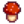
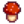

Lista de todos los regalos
La siguiente es una tabla clasificable de regalos relevantes de cada aldeano en Stardew Valley.
Los Regalos Universales aplican para todos los aldeanos, pero hay excepciones. Los gustos individuales de cada aldeano pueden sobrescribir los gustos universales. Mira los Regalos Universales para más información.
- Todas las setas =
 Seta común,
Seta común,  Chantarela,
Chantarela,  Seta magmática,
Seta magmática,  Colmenilla,  Seta roja,
Colmenilla,  Seta roja,  Seta lila.
Seta lila. - Todos los huevos =
 Huevo,
Huevo,  Huevo marrón,
Huevo marrón,  Huevo XXL,
Huevo XXL,  Huevo marrón XXL,
Huevo marrón XXL,  Huevo de pato,
Huevo de pato,  Huevo dorado,
Huevo dorado,  Huevo de avestruz,
Huevo de avestruz,  Huevo sombrío.
Huevo sombrío. - Frutas de árbol =
 Manzana,
Manzana,  Albaricoque,
Albaricoque,  Cereza,
Cereza,  Naranja,
Naranja,  Melocotón,
Melocotón,  Granada.
Granada.